align_*
The ggalign package provides a range of
align_* functions that enable control over the layout.
Specifically, these functions allow for the manipulation of axis order
in the layout, as well as partitioning along a single axis into multiple
panel. Additionally, some of these functions have the capability to add
plots.
Currently, there are four primary align_* functions:
align_group, align_reorder,
align_kmeans and align_dendro.
set.seed(123)
small_mat <- matrix(rnorm(81), nrow = 9)
rownames(small_mat) <- paste0("row", seq_len(nrow(small_mat)))
colnames(small_mat) <- paste0("column", seq_len(ncol(small_mat)))
align_group
align_group just group along a layout axis into
different panel. It won’t add any plot area.
ggheatmap(small_mat) +
hmanno("t") +
align_group(sample(letters[1:4], ncol(small_mat), replace = TRUE))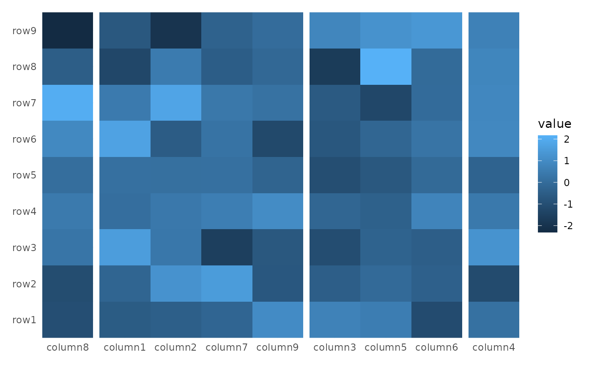
By default, the facet strip text will be removed, you can override
the behaviour with theme(strip.text = element_text()).
Because align_group has no plot area, you can only add the
panel title in the heatmap plot.
ggheatmap(small_mat) +
theme(strip.text = element_text()) +
hmanno("l") +
align_group(sample(letters[1:4], nrow(small_mat), replace = TRUE))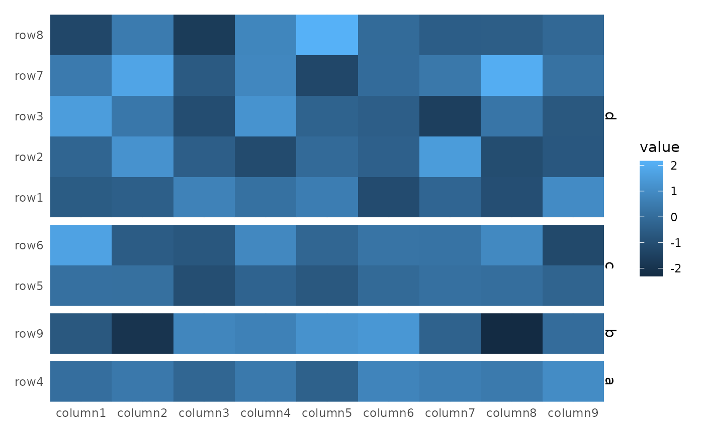
align_reorder
align_reorder reorder the layout rows/columns based on a
summary function. It won’t add any plot area.
ggheatmap(small_mat) +
hmanno("l") +
align_reorder(rowMeans)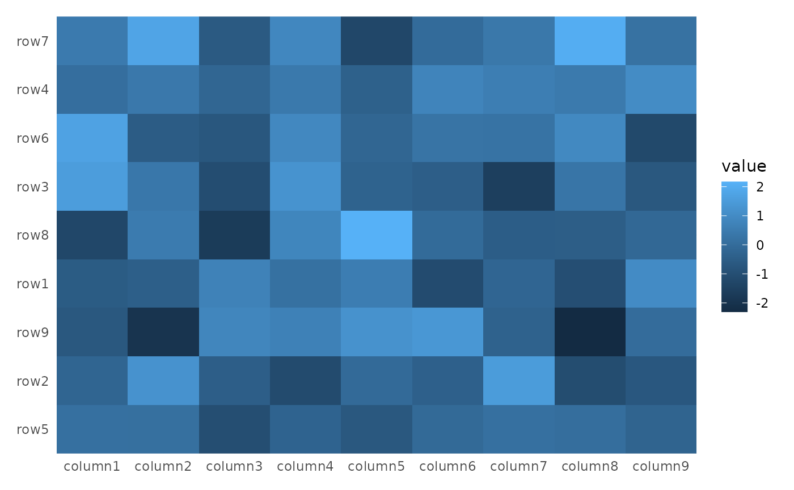
Some align_* functions accept a data
argument. This argument can be a matrix, a data frame, or even a simple
vector that will be converted into a one-column matrix. If the
data argument is set to NULL, the function
will use the layout data, as shown in the previous example.
Additionally, the data argument can also accept a function
(purrr-like lambda is also okay), which will be applied with the layout
data.
It is important to note that all
align_*function consider the rows as the observations. It means theNROWfunction must return the same number as the layout parallel axis. So for heatmap column annotation, the heatmap matrix will be transposed before using (Ifdatais a function, it will be applied with the transposed matrix).
So even for top and bottom annotation, we can also use the
rowMeans to calculate the mean value across all
columns.
ggheatmap(small_mat) +
hmanno("t") +
align_reorder(rowMeans)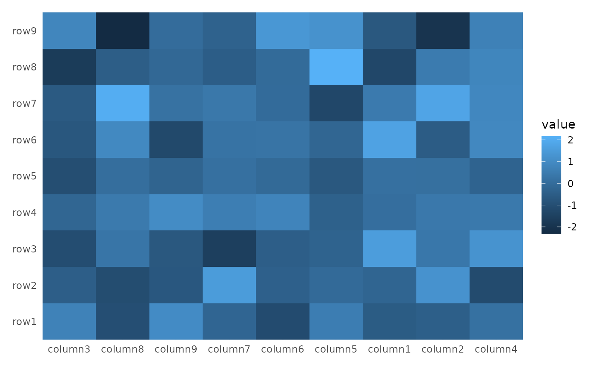
align_kmeans
align_kmeans group heatmap rows/columns by kmeans. It
won’t add any plot area.
ggheatmap(small_mat) +
hmanno("t") +
align_kmeans(3L)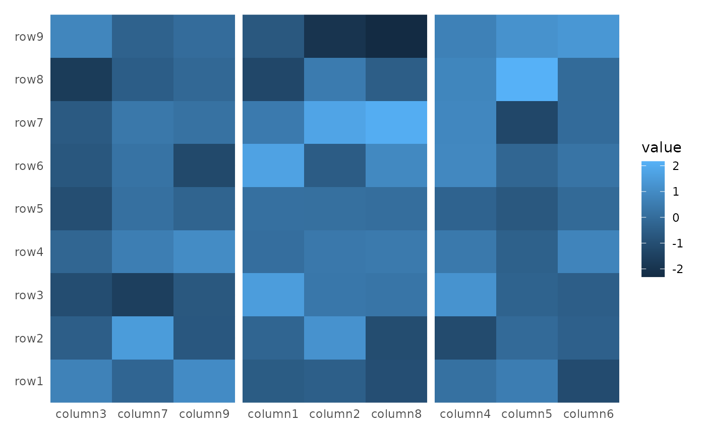
It is important to note that both align_group and
align_kmeans cannot do sub-groups. It means you cannot use
them when there has been any groups exist.
ggheatmap(small_mat) +
hmanno("t") +
align_group(sample(letters[1:4], ncol(small_mat), replace = TRUE)) +
align_kmeans(3L)
#> Error in `align_kmeans()`:
#> ! `align_kmeans()` cannot do sub-split
#> ℹ Group of layout x-axis already exists
ggheatmap(small_mat) +
hmanno("t") +
align_kmeans(3L) +
align_group(sample(letters[1:4], ncol(small_mat), replace = TRUE))
#> Error in `align_group()`:
#> ! `align_group()` cannot do sub-split
#> ℹ Group of layout x-axis already existsalign_dendro
align_dendro class the addition of a dendrogram near the
heatmap and and it can also reorder the heatmap. This is primarily
useful when working with heatmap plots.
ggheatmap(small_mat) +
hmanno("t") +
align_dendro()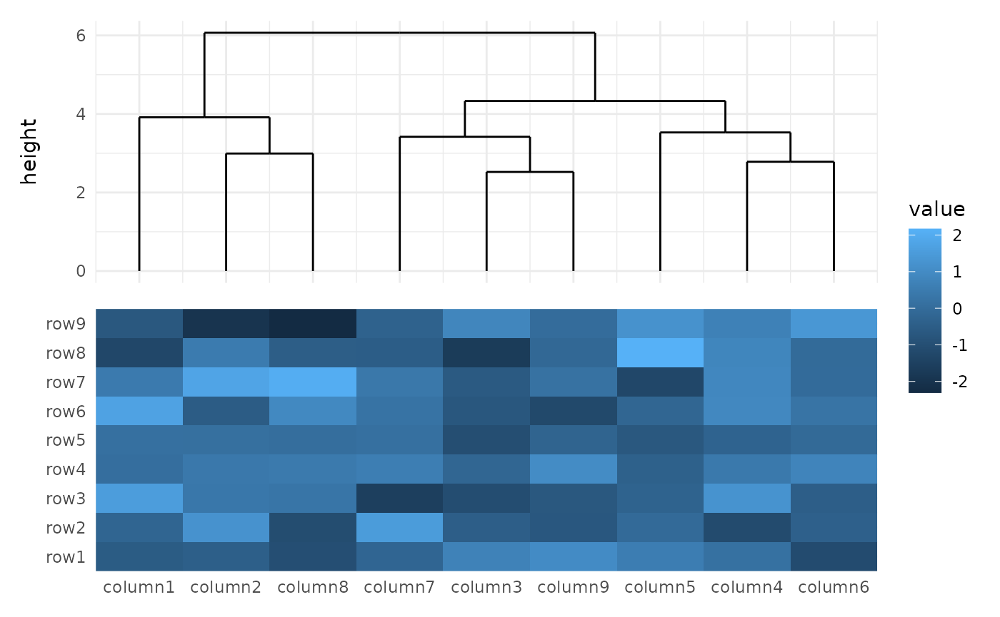
You can use the distance and method
argument to control the dendrogram builind proce.
ggheatmap(small_mat) +
hmanno("t") +
align_dendro(method = "ward.D2")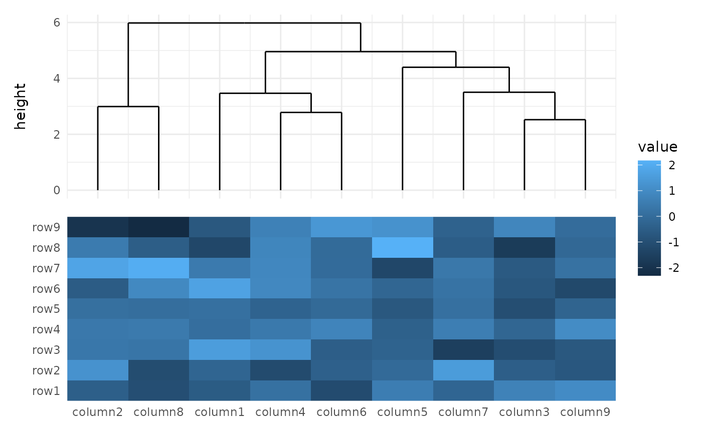
One useful function of dendrogram is to cut the columns/rows into
groups. You can specify k or h, which works
the same with cutree.
ggheatmap(small_mat) +
hmanno("t") +
align_dendro(k = 3L)In contrast to align_group, align_kmeans,
and align_reorder, align_dendro is capable of
drawing plot components. Therefore, it has a default
set_context value of TRUE, which indicates
whether to set the active context to current Align object.
Consequently, any ggplot elements added thereafter will be included in
this plot area.
ggheatmap(small_mat) +
hmanno("t") +
align_dendro() +
geom_point(aes(y = y))align_dendro will create a default node
data for the ggplot. See ?dendrogram_data for details. In
addition, edge data has been added into the
geom_segment layer directly which was used to draw the
dendrogram tree. One useful variable in both node and edge
data is branch column, which corresponding to
the cutree result.
ggheatmap(small_mat) +
hmanno("t") +
align_dendro(aes(color = branch), k = 3) +
geom_point(aes(color = branch, y = y))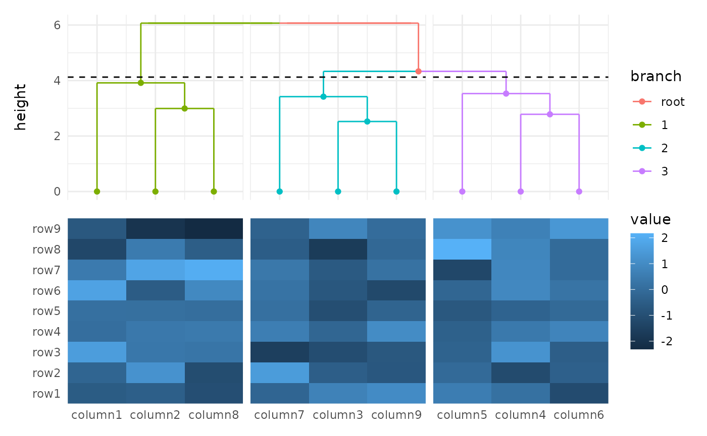
align_dendro is also capable of performing clustering
between groups. This means that you can use it even if there are already
existing groups present in the layout.
column_groups <- sample(letters[1:3], ncol(small_mat), replace = TRUE)
ggheatmap(small_mat) +
hmanno("t") +
align_group(column_groups) +
align_dendro(aes(color = branch))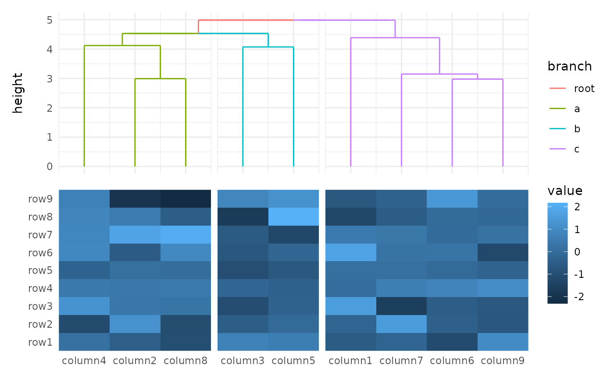
You can reorder the groups by setting
reorder_group = TRUE.
ggheatmap(small_mat) +
hmanno("t") +
align_group(column_groups) +
align_dendro(aes(color = branch), reorder_group = TRUE)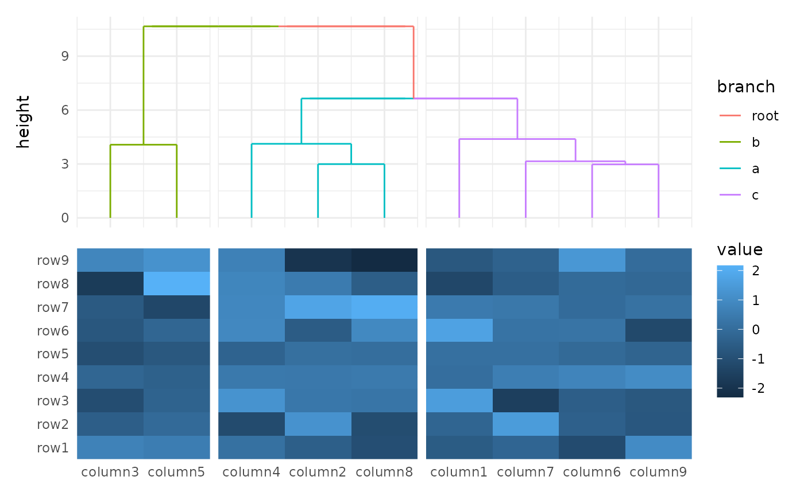
You can see the difference.
ggheatmap(small_mat) +
hmanno("t") +
align_group(column_groups) +
align_dendro(aes(color = branch), reorder_group = TRUE) +
hmanno("b") +
align_dendro(aes(color = branch), reorder_group = FALSE)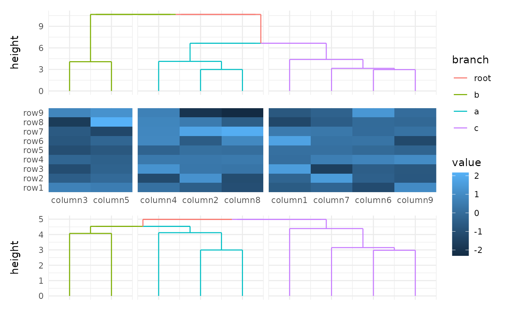
It is important to understand that when
reorder_group = FALSE is used, the reordering of the
heatmap occurs within each group. As long as the ordering within each
group remains the same, these two dendrograms can be placed on the same
axis of the heatmap. This is why adding a dendrogram with
reorder_group = FALSE behind a dendrogram with
reorder_group = TRUE is acceptable, as the second
align_dendro will follow the group ordering established by
the first one. However, it is not possible to add a dendrogram with
reorder_group = TRUE behind a dendrogram with
reorder_group = FALSE because the second dendrogram would
not be able to conform to the grouping order followed by the first
dendrogram.
ggheatmap(small_mat) +
hmanno("t") +
align_group(column_groups) +
align_dendro(aes(color = branch), reorder_group = FALSE) +
hmanno("b") +
align_dendro(aes(color = branch), reorder_group = TRUE)
#> Error in `align_dendro()`:
#> ! `align_dendro()` disrupt the previously established order of the
#> layout x-axisWe always prevent users from reordering the layout axis twice.
align_gg
align_gg is similar to ggplot in that it
initializes a ggplot data and mapping. The
data input can be a matrix, a data frame, or a simple vector that will
be converted into a one-column matrix, and can inherit from the heatmap
matrix.
The internal will always use a default mapping for the parallel axis
with layout (aes(y = .data$.y) or
aes(x = .data$.x)).
For ggplot usage, matrix (including a simple vector) data is
converted into a long-format data frame, similar to the process utilized
in ggheatmap. But note that the long-format data frame does
not contain .row_panel or .column_panel
column, as align_gg can only have one facet axis. In the
case where the input data is already a data frame, three additional
columns-(.row_names, .row_index, and
.panel)—are added to the data frame.
The data in the underlying ggplot object contains
following columns:
.panel: the panel for current annotation.row_namesand.row_index: the row names and row index of the original matrix or data frame..column_namesand.column_index: the row and column index of the original matrix (only applicable ifdatais amatrix)..xor.y: thexorycoordinatesvalue: the actual matrix value (only applicable ifdatais amatrix).
You can also use ggalign function which is an alias of
align_gg.
ggheatmap(small_mat) +
scale_fill_viridis_c(guide = "none") +
hmanno("t") +
align_dendro(aes(color = branch), k = 3) +
ggalign(data = rowSums) +
geom_bar(aes(y = value, fill = .panel), stat = "identity") +
scale_fill_brewer(palette = "Dark2") +
hmanno("l") +
ggalign(aes(x = value), data = rowSums) +
geom_bar(
aes(y = .y, fill = factor(.y)),
stat = "identity",
orientation = "y"
) +
scale_fill_brewer(palette = "Set1") +
scale_x_reverse()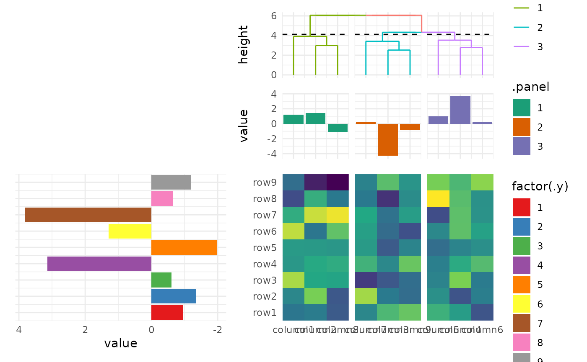
Session information
sessionInfo()
#> R version 4.4.1 (2024-06-14)
#> Platform: x86_64-pc-linux-gnu
#> Running under: Ubuntu 22.04.4 LTS
#>
#> Matrix products: default
#> BLAS: /usr/lib/x86_64-linux-gnu/openblas-pthread/libblas.so.3
#> LAPACK: /usr/lib/x86_64-linux-gnu/openblas-pthread/libopenblasp-r0.3.20.so; LAPACK version 3.10.0
#>
#> locale:
#> [1] LC_CTYPE=C.UTF-8 LC_NUMERIC=C LC_TIME=C.UTF-8
#> [4] LC_COLLATE=C.UTF-8 LC_MONETARY=C.UTF-8 LC_MESSAGES=C.UTF-8
#> [7] LC_PAPER=C.UTF-8 LC_NAME=C LC_ADDRESS=C
#> [10] LC_TELEPHONE=C LC_MEASUREMENT=C.UTF-8 LC_IDENTIFICATION=C
#>
#> time zone: UTC
#> tzcode source: system (glibc)
#>
#> attached base packages:
#> [1] stats graphics grDevices utils datasets methods base
#>
#> other attached packages:
#> [1] ggalign_0.0.1 ggplot2_3.5.1
#>
#> loaded via a namespace (and not attached):
#> [1] gtable_0.3.5 jsonlite_1.8.8 highr_0.11 dplyr_1.1.4
#> [5] compiler_4.4.1 tidyselect_1.2.1 tidyr_1.3.1 jquerylib_0.1.4
#> [9] systemfonts_1.1.0 scales_1.3.0 textshaping_0.4.0 ggh4x_0.2.8
#> [13] yaml_2.3.10 fastmap_1.2.0 R6_2.5.1 labeling_0.4.3
#> [17] generics_0.1.3 patchwork_1.2.0 knitr_1.48 tibble_3.2.1
#> [21] desc_1.4.3 munsell_0.5.1 RColorBrewer_1.1-3 bslib_0.8.0
#> [25] pillar_1.9.0 rlang_1.1.4 utf8_1.2.4 cachem_1.1.0
#> [29] xfun_0.46 fs_1.6.4 sass_0.4.9 viridisLite_0.4.2
#> [33] cli_3.6.3 pkgdown_2.1.0 withr_3.0.1 magrittr_2.0.3
#> [37] digest_0.6.36 grid_4.4.1 lifecycle_1.0.4 vctrs_0.6.5
#> [41] evaluate_0.24.0 glue_1.7.0 farver_2.1.2 ragg_1.3.2
#> [45] fansi_1.0.6 colorspace_2.1-1 rmarkdown_2.27 purrr_1.0.2
#> [49] tools_4.4.1 pkgconfig_2.0.3 htmltools_0.5.8.1